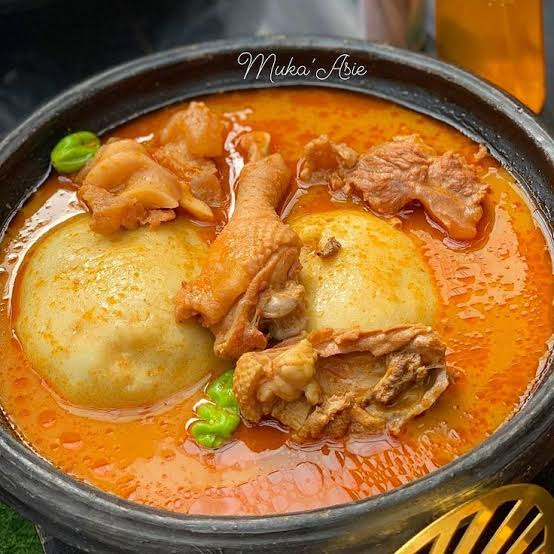

Come let's prepare fufu!
Below are the ingredients and steps;
INGREDIENTS
For chicken light soup
- Chicken — 1 whole chicken or about 1 kg, cut into pieces
- 4–5 fresh tomatoes
- 2–3 fresh peppers (Kpakpo shito or any fresh pepper)
- 1 large onion
- 1–2 cloves of garlic
- Small piece of ginger
- 1 teaspoon prekese — optional
- Salt — to taste
- Water
- 1 seasoning cube — optional
Ingredients for fufu
STEPS
How to prepare the chicken light soup:
- Wash and season the chicken.
- Put the chicken in a pot and add:
- chopped onion,
- blended/crushed ginger and garlic,
- a little salt,
- and seasoning cube if you're using one.
- Now add a small amount of water and let the chicken steam for about 10–15 minutes.
- While the chicken is steaming, blend your tomatoes, pepper and onion together.
- Pour the blended mixture into the pot with the chicken.
- Add enough water to give you the amount of soup you want.
- Add the prekese if you're using it.
- Cover and let it boil. Once the chicken is cooked and tender, allow the soup to simmer for another 15–20 minutes.
- Taste and adjust the salt and pepper.
- If you want the soup lighter and smoother, let it continue boiling uncovered for a few minutes until you get the consistency you like.
How to prepare the fufu
- Peel the cassava and plantain.
- Wash them thoroughly and cut them into smaller pieces.
- Put them in a pot, add water and boil until they become very soft.
- Drain the water.
- Traditionally, put the boiled cassava and plantain into an asanka/mortar and pound.
- Pound while turning and folding the mixture until it becomes smooth, stretchy and lump-free.
- Add a tiny amount of water if necessary while pounding.
- When it's smooth, use a wet bowl or your hands to shape it into balls.
Your fufu is now ready, enjoy!
